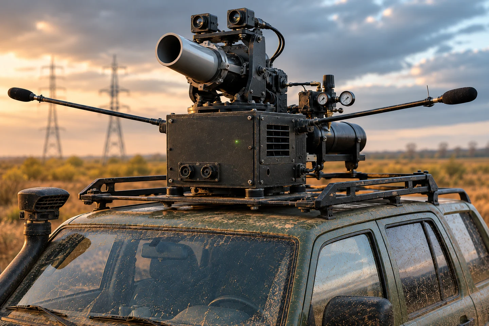
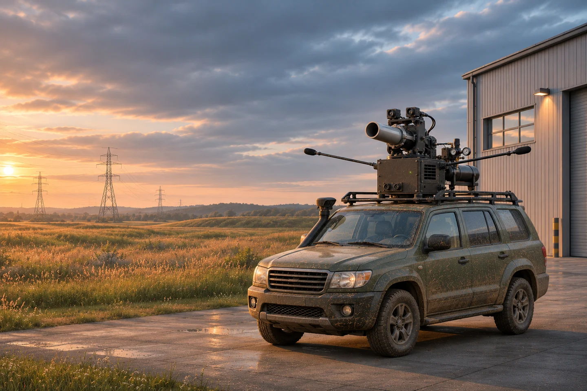
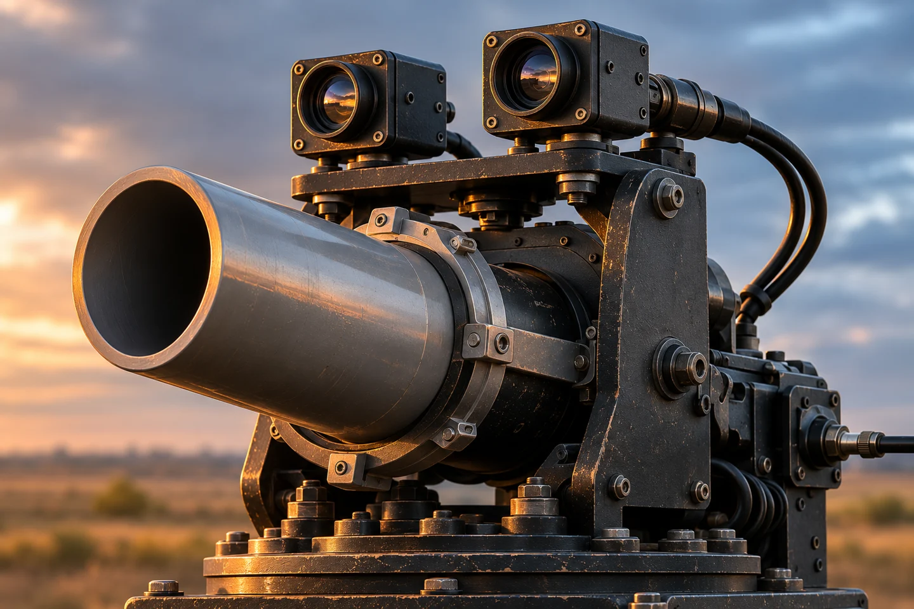
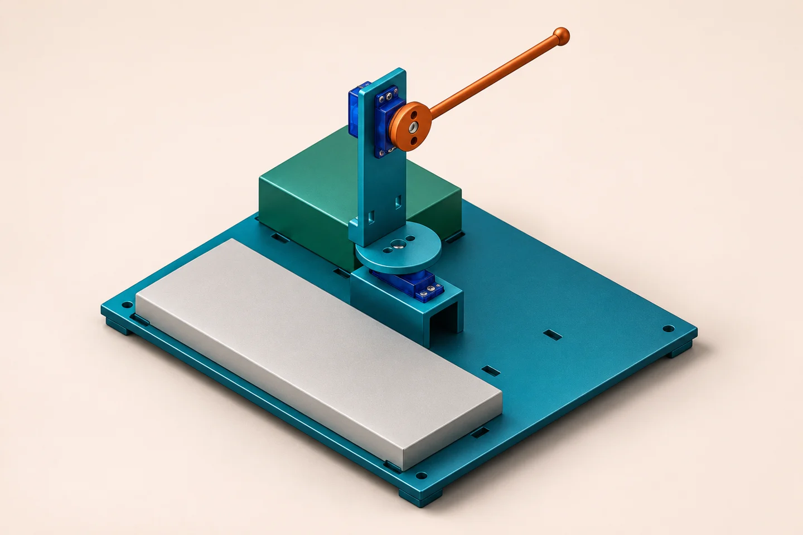
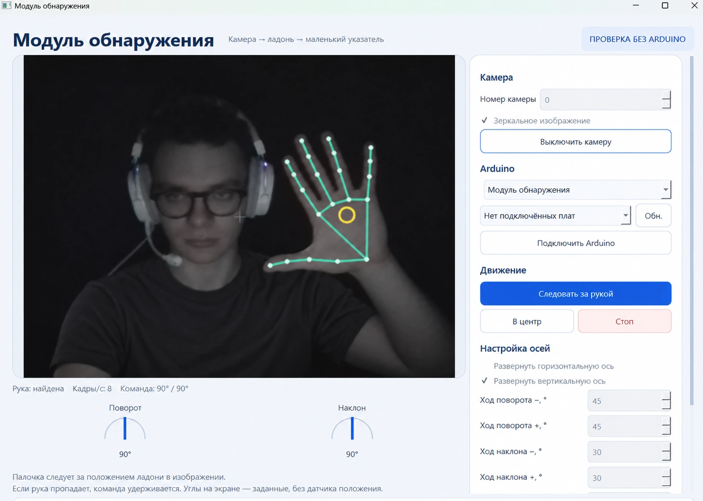

Перехват сетью
00:00 / 00:21
От концепции перехвата сетью
к настольному модулю сопровождения.

Локальная защита
от малых беспилотников.
Цель — создать компактную систему, которая замечает аппарат, сопровождает его движение и перехватывает сетью вблизи защищаемого объекта.

Наблюдать за пространством рядом с отдельным объектом.
Объединить наблюдение и поворотный механизм в одном модуле.
Физически ограничить движение небольшого летательного аппарата.

Камера получает изображение, программа выделяет объект в кадре.
Положение объекта используется для изменения направления поворотного узла.
В замысле полной системы сеть раскрывается и охватывает аппарат.
Сейчас разрабатывается модуль визуального сопровождения. Сетевой перехват — следующий этап.
Настольный модуль
визуального сопровождения
Небольшой стенд с поворотом и наклоном лёгкого указателя. На нём проверяется, как положение объекта в кадре превращается в движение механизма.

Поворот по горизонтали
и наклон по вертикали.
Камера наблюдает за рукой.
Двигается указатель.
Плата получает команды
для двух сервоприводов.
Переместите ладонь на схеме или используйте ползунки.
Интерактивная схема связи изображения и движения.
Получает кадр
Находит ладонь
Принимает команды
Двигают указатель
В ранней демонстрации видно, как за движением руки меняется положение указателя.
Распознаёт ладонь с помощью MediaPipe, обрабатывает координаты и формирует плавные команды для двух осей.

Её удобно двигать перед камерой, менять направление и повторять движение. Так наглядно проверяется связь между изображением и реакцией стенда.
Разработана обработка изображения и расчёт команд движения.
Созданы протокол команд и прошивка для двух приводов.
Подготовлены CAD и материалы ранней демонстрации.